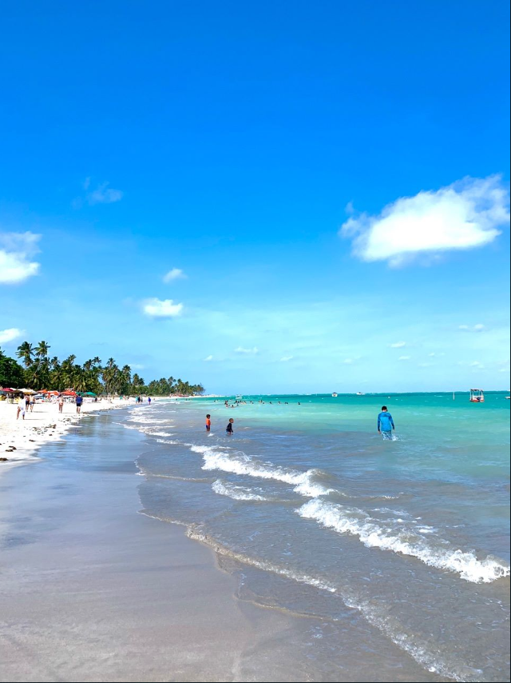
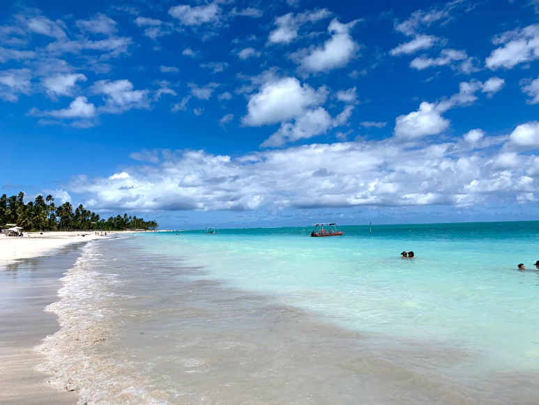
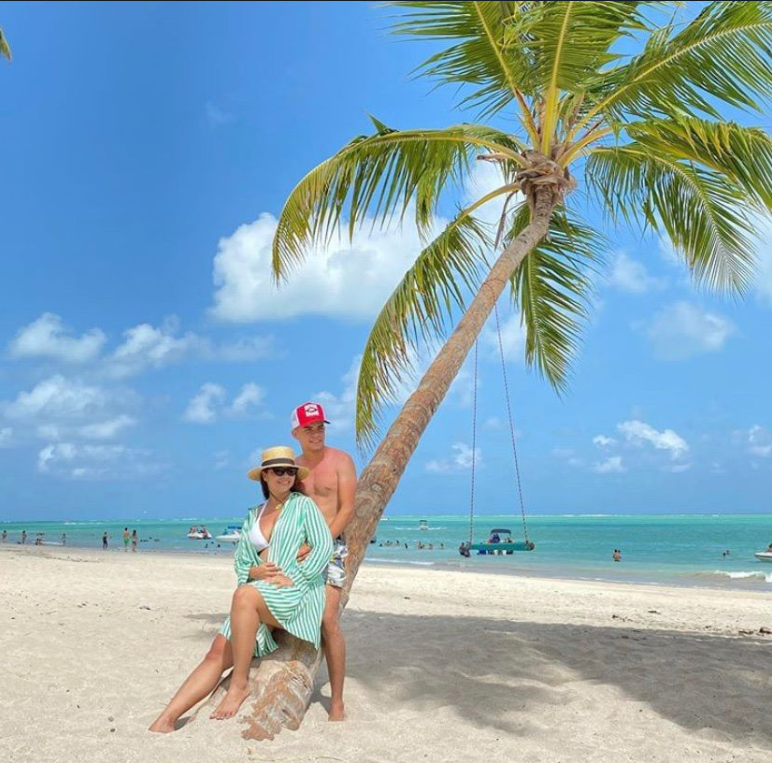
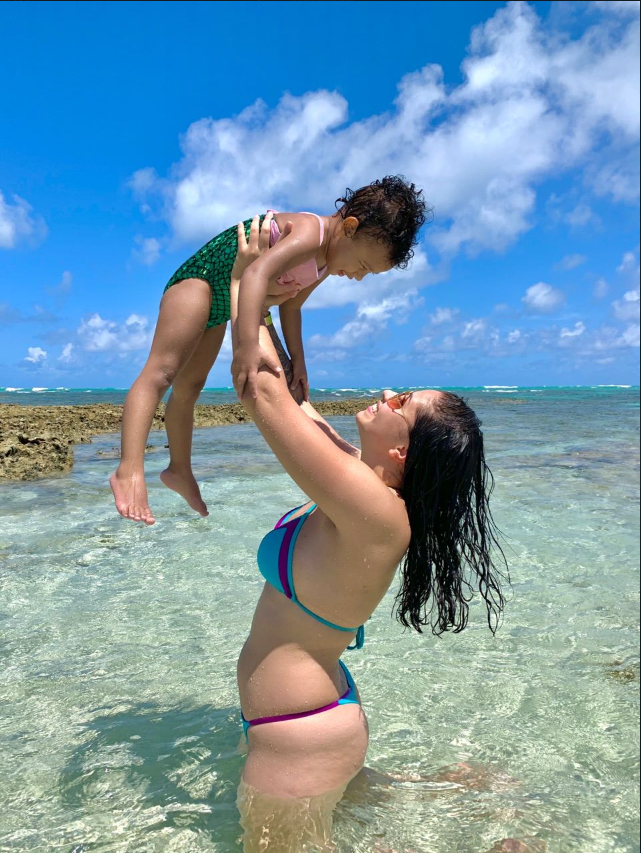
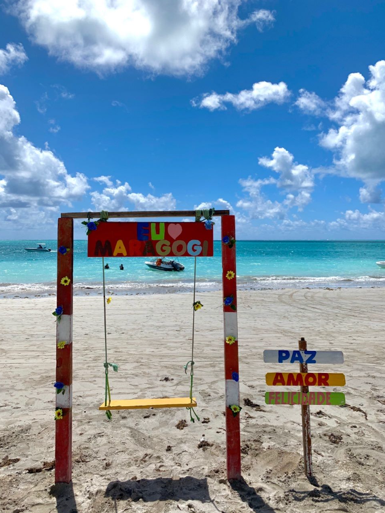
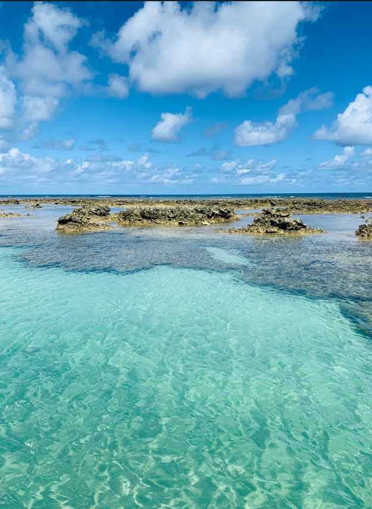
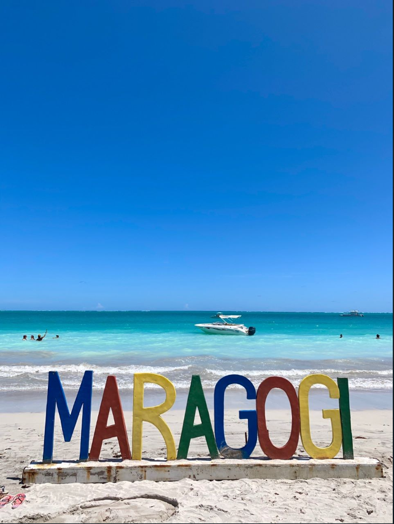

Maragogi é o destino mais procurado do Nordeste, famoso por suas águas cristalinas e piscinas naturais paradisíacas.
Aqui, a maré faz toda a diferença — e a Praiô cuida disso pra você, organizando sua experiência no melhor horário.
E a cereja do bolo? O inesquecível passeio de lancha até as piscinas naturais, vivendo o melhor de Maragogi com conforto, exclusividade e paisagens surreais.
Consultar Maragogi no WhatsApp